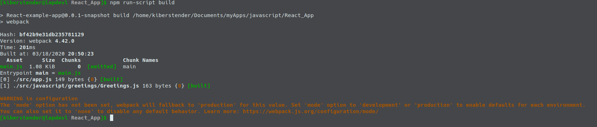
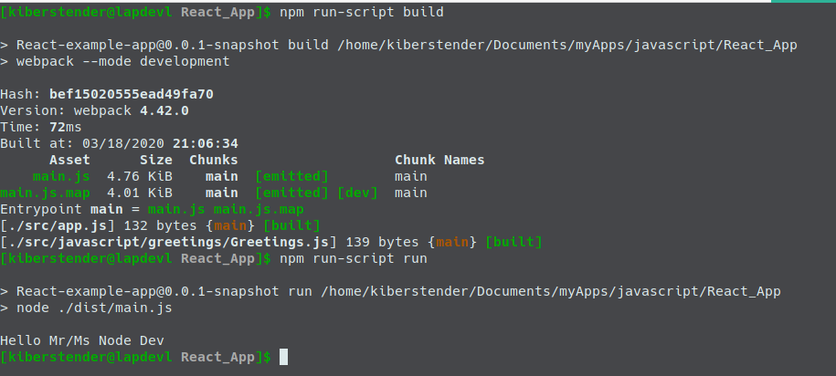
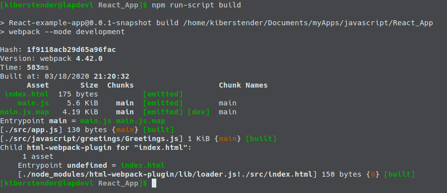
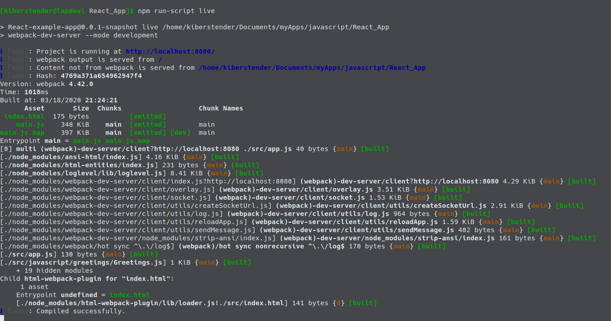
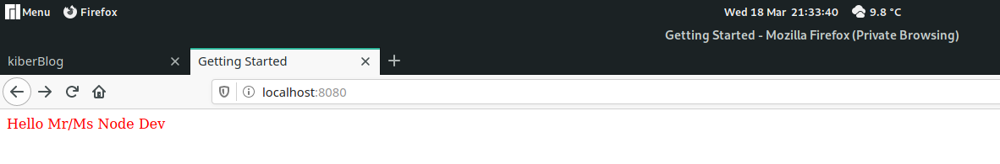
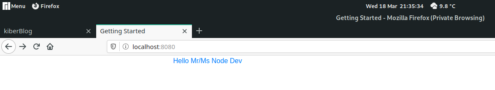
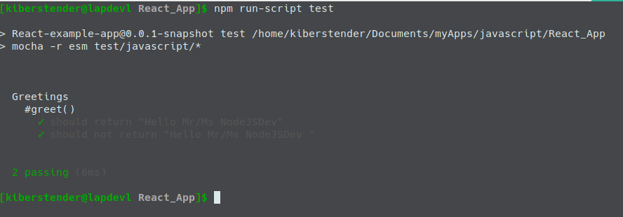

Introdução
Olá novamente caro leitor. Na última postagem aprendemos o que é NodeJS, como e porque usá- lo. Hoje iremos dar um passo à frente e entender o que, porque e como usar Webpack. Iremos comntinuar o desenvolvimento de nosso project anterior de Javascript, então se você não leu a primeira postagem por favor leia antes desta postagem.
Webpack
Enquanto o NPM é como um Maven para o Node, você pode listar e baixar suas dependências, Webpack é onde você diz o que fazer com essas dependências. Quando você está listando devDependencies em seu package.json estas dependências são applicações CLI(Command line Interface), isso significa que, aplicações que rodam em seu terminal/prompt cmd and estes em particular você usa para fazer transformações em seu código, como escrever tudo em Typescript e depois converter para javascript. Enquanto você poderia manualmente fazer isso instalando o compilador de Typescript como você faz/faria com Java, Webpack deixa você criar funções e agir em seu código, como em um modo automatizado. Webpack tabmém tem um modo de production/development onde ele faz algumas coisas por padrão para você, como uglify(deixar seu código ilegível para seres humanos) automaticamente quando em modo de Produção.
Para garantir que esta postagem não falhará no futuro, instale tudo na mesma versão que estou a colocar aqui:
npm install --save-dev webpack@4.42.0 webpack-cli@3.3.11 webpack-dev-server@3.10.3
Veja seu arquivo package.json. O NPM adicionou uma nova devDependency para você e ela deve ter uma nova propriedade como esta:
... "devDependencies": { ... "webpack": "^4.42.0", "webpack-cli": "^3.3.11", "webpack-dev-server": "^3.10.3" ... } ...
Você talvez percebeu que na raiz de sua aplicação foi criado um diretório chamado node_modules. Este diretório contem as dependências que o NPM baixou para você e você pode ignorá-lo usando o arquivo .gitignore e/ou o arquivo .dockerignore porque o NPM irá sempre cuidar desse diretório e recriá-lo se você o deletar, então não se preocupe com ele.
Não apenas isso, mas um novo arquivo fora criado na raíz de sua aplicação, chamado package-lock.json. Este arquivo é similar ao package.json mas com uma diferença: Ele lista toda a árvore de dependências, tornando mais fácil para o NPM instalar as dependências e depois verificar se há conflitos, como se package.json fosse a versão legível para humanos e o package-lock.json é a versão legível para máquinas. Ele sempre será criado automaticamente para você quando você rodar npm install.
Explicando o que a gente acaba de instalar temos:
- Webpack é uma API para usar dentro de sua aplicação Node que ajuda a customizar o "build"
- Webpack-cli é uma aplicação CLI que faz a mesma coisa que o Webpack mas não você precisa importar o Webpack em sua aplicação, você "passa" sua aplicação cpomo parâmetro para o Webpack e o resto é trabalho da biblioteca Webpack
- Webpack-dev-server é um servidor simples para rodar sua aplicação em live-reload, logo qualquer arquivoi que você salvar, Webpack irá detectar se houve alguma modificação e se houve irá recompilar somente este arquivo e você não precisa parar sua aplicação completamente por causa de uma mudança.
Webpack tem um comportamente padrão que, quando você o executa, ele irá procurar por um arquivo chamado app.js no diretório src e criará um novo arquivo chamado main.js dentro de um diretório chamado dist na rapiz de sua aplicação. Na versão 4.42.0 (a versão que estamos a usar neste momento) tem um problemae não está corretamente construindo nossa aplicação, então para que funcione corretamente é necessário que criemos um arquivo de nome webpack.config.js na raiz de sua aplicação. Após criado adicione o seguinte conteúdo:
const path = require('path'); module.exports = { entry: './src/app.js', output: { filename: 'main.js', path: path.resolve(__dirname, 'dist') }, devtool: 'source-map' };
PS: A crição do arquivo webpack.config.js se faz necessária apenas se você deseja customizar o build, geralmente se você planeja usar o padrão do webpack não há necessidade de criar tal arquivo, estou apenas reforçando aqui que há um bug que te força criar o arquivo mesmo que vc não vá usar nada fora do padrão. Neste tutorial iríamos usar o arquivo de qualquer forma.
Como você pode ser, esta é uma configuração beeeeem simples. O problem na versão 4.42.0 é que por alguma razão quando você não tem o arquivo acima, quando executado o webpack ele reclama que não consegue encontrar ./src. Até solucionarem o problema irei manter aqui para quem estiver lendo saber que o problema exsite e tavez isso seja útil.
Agora adicione o novo comando aos scripts:
... "scripts": { ... "build": "webpack" } ...
Agora execute o script e você deverá ver algo semelhante a imagem:
Este aviso está aí porque como eu mencionei no começo, o Webpack tem suporte para ambientes de produção e desenvolvimento, logo, quando você não especifica qual ambiente você está usando ele vai para o padrão que é produção e emite este aviso para que você saiba que precisa especificar a informação esquecida. Você pode modificar seu script em package.json e criar dois comandos de build como estes:
... "scripts": { ... "build": "webpack --mode development", "build:prod": "webpack --mode production" } ...
Agora se você executar o comando build, você não verá nenhum aviso. Se você olhar a raiz de sua aplicação poderá notar um diretório chamado dist. Este diretório contem um arquivo chamado main.js. Este arquivo é muito maior que os dois arquivos que temos em nossa base de código. porque o Webpack ajuda você adicionando algumas coisas que lhe permitem usar a síntaxe 'import/export', logo, vamos dizer que você quer importar uma biblioteca de terceiros como momentjs você pode adicionar no topo de seu arquivo(após instalá-la usando npm install):
import moment from 'moment'
console.log(`Time now: ${moment(new Date()).format()}`);
Ou mesmo suas próprias bibliotecas quando você começar a desenvolvê-las. Vamos fazer isso. Primeiro vá até o arquivo Greetings.js e mude-o com o seguinte:
export default class Greetings { constructor(name){ this.name = name; } greet(){ return `Hello Mr/Ms ${this.name}`; } }
Agora vá até o arquivo app.js e mude-o para o seguinte:
import Greetings from "./javascript/greetings/Greetings" let greetDev = new Greetings("Node Dev"); console.log(greetDev.greet());
Se você quiser executar a aplicação agora você pode adicionar um novo comando aos scripts:
... "scripts": { ... "run": "node ./dist/main.js" } ...
Agora pode execute sua aplicação "Hello, Mr/Ms Node Dev" novamente:
E você tem a síntaxe mais atualizada agora. Ao invés de usar a função require, você agora usa 'import/export'
Configuração de build customizada
No arquivo webpack.config.js você especifica todas as coisas que você gostaria de 'buildar' em sua aplicação, como, compilar Typescript para Javascript, SASS para CSS, copiar os arquivos de um diretório para outro(Imagine que você esteja trabalhando com Spring, ao invés de colocar tudo em dist você pode copiar para /src/main/resources/static/) e outras coisas legais que você irá ver. Em entry você pode mudar onde o Webpack irá procurar pelo primeiro arquivo Javascript(ao invés de procurar pelo app.jsdentro de src você pode mudar para index.jsdentro de js por exemplo) e em output você pode mudar onde o Webpack irá colocar seus arquivos processados e ainda mudar o nome de main.js para qualquer coisa que você queira. Em devtools nós estamso simplesmente dizendo ao Webpack para criar um map file para todos os nosso arquivos javascript, deixando mais fácil para os navegadores debugarem e interpretarem seu código.
Loaders
Depois de uma configuração básica(No meu caso eu simplesmente mantive a configuração padrão por agora), você precisa entender um conceito que o Webpack nos traz: O coneito de Loaders(Carregadores).
Loaders são aplicações que operam em alguns arquivos(definidos por você) and que transformam, validam, modificam estes arquivos. Por exemplo, hoje em dia temos pelo menos 3 versões grandes de Javascript: ES5, ES6 e ES2018. Todas elas tem diferenças e em alguns navegadores as implementaram parcialmente. Então vamos dizer que você quer usar toda a nova síntaxe do ES2018 mas você não tem certeza se todos os seus usuários possuem navegadores atualizados ou mesmo se os navegadores possuem implementação estável de algumas das coisas que você está interessado em usar (como import/export). Uma boa solução que temos hoje é usar Babel. Babel é um transpilador de Javascript para Javascript, então você pode programar em ES2018 e compilar (ou neste caso transpilar) para uma versão mais velha de Javascript cujos navegadores já dominam. Para fazer isso você precisa criar um loader em seu arquivo de configuração do Webpack. A primeia coisa no entanto, é adicionar o Babel as nossas devDependency:
npm install --save-dev babel-loader@8.0.6 @babel/core@7.8.4 @babel/preset-env@7.8.4
Agora mude seu arquivo de configuração do Webpack para adicionar o loader:
... devtool: 'source-map' module: { rules: [ { test: /\.(js|jsx)$/, exclude: /node_modules/, use: { loader: "babel-loader", options: { presets: ['@babel/preset-env'] } } } ] } ...
Agora não somente você tem suporte para import/export como antes, mas o Babel irá garantir que navegadores antigos também irão rodar seu código também.
HTML-Loader e HTMLWebpackPlugin
Be,, tudo muito bonito e legal, mas, a idéia deste tutorial é criar um frontend e não uma aplicação CLI. Logo o próximo passa é ledar com arquivos HTML. Mas ... o que se tem pra lidar? HTML é uma "linguagem*" tão simples, porque você iria precisar manipulá- la? Por agora nós somente temos um arquivo javascript(main.js), mas conforme nossa aplicação cresce as boas práticas nos pedem para separarmos nossa aplicação em o máximo de arquivos que pudermos/precisarmos e por Javascript ser uma linaguagem interpretada, se você esquecer de incluir algum arquivo(via import ou via <script src=".../path">) você não irá notar até ser tarde demais. Logo temos uma forma automatizada de adicionar todos os arquivos Javascript e CSS, para que nunca nos esqueçamos deles. Para conseguir essa proeza, nós temos o HtmlWebpackPlugin. Um plugin diferente de um loader irá modificar os arquivos adicionando ou removendo coisas (grosseiramente falando, um plugin porde faqzer bem mais do que isso, ele pode agir em todos os ciclos de compilação). Para configurarmos este plugin primeiro adicionamos via npm install ...:
npm install --save-dev html-webpack-plugin@3.2.0
Agora você precisa atualizar seu webpack.config.js e na linha abaixo da declaração da variável path você "importa" o HTMLWebpackPlugin:
const path = require('path'); const HtmlWebpackPlugin = require('html-webpack-plugin'); ...
Após "declarar" o HtmlWebpackPlugin agora você pode configurá-lo em plugins e dizer qual o arquivo HTML que quer operar:
... module.exports = { entry: ..., output: {...}, module:{...}, plugins: [ new HtmlWebpackPlugin({template: './src/index.html'}) ] } ...
PS: Você pode especificar mais de um arquivo HTML mas lembre-se Webpack é mais indicado para aplicação de uma só página, as famosas, SPA(Single Page Application)
Se você executar isso, você irá perceber que tem 2 problemas:
- Nós não temos um arquivo HTML ainda
- Webpack irá reclamar que precisamos de um loader para arquivos HTML
Primeiro iremos corrigir o problema do arquivo HTML inexistente. Crie nosso arquivo HTML chamando- o de index.html dentro src. Agora que você o criou adicione o seguinte conteúdo:
<!doctype html> <html> <head> <title>Getting Started</title> </head> <body><div id="root"><div></body> </html>
Agora iremos adicionar o loader para os arquivos HTML. Simplesmente instale html-loader em sua lista de devDepencies:
npm install --save-dev html-loader@0.5.5
Agora você deve ter duas novas devDependencies em seu arquivo package.json como eu tenho:
PS: Imagem antiga antes de eu começar a usar Webpack 4.42.0
Você pode executar agora, mas ainda não irá funcionar, porque nós não temos o html-loader configurado:
... module: { rules: [ ..., { test: /\.(html|htm)$/, use: { loader: 'html-loader' } } ] } ...
Se você executar agora deverá ver:
Mas não somente isto. Se você prestar atenção ao nosso arquivo HTML, não há nenhuma tag <script>, mas se você ir até o diretório dist e abrir o arquivo index.html poderá ver que lá existe a tag <script type="text/javascript" src="main.js"></script> adicionando nosso arquivo main.js. O loader não está ali apenas para ajudar nosso plugin a funcionar, nós podemos melhorar isso por exemplo removendo todos os espaços em branco em nosso arquivo HTML tornando- o mais leve para tranferir. Simplesmente adicione os seguintes valores na propriedade options:
... { test: /\.(html|htm)$/, use: { loader: 'html-loader', options: { // Disables tags and attributes processing minimize: true } } } ...
Agora vamos criar nosso commando de hot-reload em nossa aplicação e recarregà- la automaticamente toda vez que você fizer alguma modificação em algum arquivo. Abra seu arquivo package.json e na propriedade scripts adicione estas linhas:
... "scripts": { ... "live": "webpack-dev-server --mode development", "live:prod": "webpack-dev-server --mode production" } ...
Execute e veja o seguinte:
Vá até http://localhost:8080 e veja sua página aberta com o Título: Getting started e o resto da página em branco. Vamos colocar alguma ação nisso. Atualize seu arquivo app.js com o conteúdo:
import Greetings from "./javascript/greetings/Greetings"; function component() { const element = document.createElement('div'); let greetings = new Greetings(); element.innerHTML = greetings.greet("John"); return element; } document.querySelector("#root").appendChild(component());
Sem parar sua aplicação, cheque seu terminal após salvar o arquivo app.js e irá ver o Webpack recompilando/transpilando os arquivos que você moduficou(neste caso apenas app.js), agora vá até seu navegador e sem pressional nada a página em branco irá te mostrar a imagem abaixo:
Like it did in the terminal.
Mas e o CSS?
Como em Javascript nós temos muitos transpiladores(Typescript, Coffescript, Javascript mesmo em diferentes versões) em CSS nós temos dois principais transpiladores(chamados pré-processadores)LESS e SASS. Neste tutorial eu irei usar SASS porque eu irei usar Boostrap e Bootstrap é feito usando SASS, logo por usar ambos juntos temos uma síntaxe mais poderosa para usar do Bootstrap(como o fato de SASS permitir a criação de funções e por isso você pode usar as funções pré-definidas no Bootstrap). Se você por alguma razão não quer usar SASS mas ainda quer usar Bootstrap, não se preocupe, ainda é possível, mas você terá que compilar o Bootstrap para CSS e aí sim usar em seus arquivos LESS ou CSS puro sem problema. Sem mais delongas vamos começar a configurar o SASS instalando todas as nossas dependências:
npm install --save-dev sass@1.25.0 sass-loader@8.0.2 style-loader@1.1.3 css-loader@3.4.2
Agora vamos configurar nosso arquivo webpack.config.js e adicionar a nova regra em nossa propriedade module:
... module:{ rules: [ ... { test: /\.s[ac]ss|css$/i, use: ['style-loader', 'css-loader', 'sass-loader'] } ... ] } ...
E isso é tudo é que você precisa para ter SASS em seu código. Um pequena menção aqui para a propriedade test onde nós temos isso s[ac]ss. Isto é porque nós temos dois formatos de arquivos para SASS: .sass e .scss. Ambos significam a mesma coisa, se você entender mais sobre isso leia aqui. Um dia pretendo fazer um tutorial focado em SASS e explicar essas diferenças de formatos de arquivos. Agora para testar se tudo funciona você pode criar um arquivo app.scssem seu diretório /src/styles e colocar o seguinte:
$a_color: red; //Uma variável .a-class-that-changes-font-to-red { color: $a_color; //Usando a varável }
Agora vá para seu arquivo index.html e modifique nossa div #root para:
... <div id="root" class="a-class-that-changes-font-to-red"></div> ...
Agora a última modificação: vá para seu arquivo app.js e importe nosso arquivo scss:
import Greetings from "./js/greetings/Greetings"; import "./styles/app.scss"; ...
PS: Sim para arquivos CSS, SASS ou LESS, quando os estamos importando não usamos a keyword "from"
Agora se você não parou a aplicação reinicie- a ou inicie- a(npm run live) caso contrário. Se seu texto agora é vermelho, parabéns, você conseguiu adicionar o pré-processador SASS em sua aplicação:
Agora vamos adicionar o Bootstrap. Instale as dependências:
npm install bootstrap@4.4.1 jquery@3.4.1
Você irá notar que estas são nossas primeiras non-devDependencies no projeto todo, isso porque precisamos delas em tempo de execução. jQuery está aqui apenas porque Boostrap precisa desta biblioteca, nós não iremos usar jQuery em nada neste tutorial. Agora para testarmos se funciona adicione as seguintes mudanças em seu arquivo app.scss:
@import '~bootstrap'; .a-class-that-changes-font-to-red { @extend .container; @extend .text-primary; }
Olhe novamente para sua página(se você não tiver parado sua aplicação, caso contrário execute-a novamente) e se o texto estiver agora azul, você conseguiu, você tem uma aplicação frontend totalmente feita com Webpack, Babel, Sass e Boostrap.
Import path resolution(Resolução de caminho de importação)
Você pode ou não ter notado uma diferença quando se importa o Bootstap e quando se importa nossos arquivos Javascript ou scss. Se você não notou, estamos usando caminho relativo ao importar, isso significa como desenvolvedores temos que saber pnde o arquivo está em relação ao que queremos importar e passar o caminho correto. Ao invés de podermos simplesmente dizer:
import Greetings from "greetings/Greetings";
Nós temos que usar:
import Greetings from "./javascript/greetings/Greetings";
Agora image que você tem outro módulo e por alguma razão você precise importar Greetings dentro deste módulo. considerando que ambos os módulos(Greetings e o novo módulo) estão no nível/diretório javascript você precisaria fazer isso:
import Greetings from "../javascript/greetings/Greetings";
Mesmo que seja apenas um ponto extra, imagine agora quão horrível será se você mudasse este novo módulo para um nível/diretório diferente em um grande projeto, você terá que arrumar todas as urls de importações deste arquivo. Então para melhorar isso e fazer com que o Webpack trabalhe por nós vamos adicionar resolução de módulo:
... module.exports = { entry: ..., output: {...}, module:{...}, resolve: { modules: [path.resolve(__dirname, 'src/js'), path.resolve(__dirname, 'src/styles'), 'node_modules'] } plugins: [...] }
Agora estamos dizendo, para qualquer módulo que importarmos, primeiro, procure- o em /src/javascript, se não puder encontrá- lo, procure dentro de /src/style então se ainda não puder enconrá- lo procure em node_modules. Agora podemos mudar nosso arquivo app.js para:
import Greetings from "greetings/Greetings"; import "index.scss"; ...
Agora você não precisa se preocupar com qual nível/diretório seus arquivos estão quando importarem algo.
Testando em Javascript com Webpack
Se você tentou executar nossos testes irá ver que temos um problema agora. Nós mudamos a velha síntaxe require em nosso arquivo Greeting.js para usar export e o Mocha não sabe o que fazer:
Para resolver este problema nós podemos instalar uma dependência chamada esme passá- la como parâmetro em nosso script test em package.json:
npm install --save-dev esm@3.2.25
Então:
... scripts: { ... "test": "mocha -r esm test/javascript/*" ... } ...
Agora por último mas não menos importante, mudamos nosso arquivo GreetingsTest.js:
import assert from 'assert'; import Greetings from '../../../src/javascript/greetings/Greetings.js'; let greetDev = new Greetings("NodeJSDev"); ...
Agora você pode executar e tudo terá voltado ao normal:
E aqui terminamos nosso tutorial de Webpack, espero que tenham aprendido e entendido bem o que ensinei ^^
* Jamais diga que HTML é uma linguagem em nenhuma entrevista. JAMAIS!
Conclusão
Nesta postagem aprendemos como Webpack funciona e como ele pode nos ajudar a melhorar produtividade. Adiciomos SASS, Bootstrap e Babel com support a nova síntaxe the Javascript. Melhoramos nossos testes e finalmente transformamos nossa aplicação CLI em um frontend. O próximo passo será adicionar React à nossa aplicação finalizando o tutorial. Sinta- se livre para acessar a versão original desta postagem em inglês inglês. Te vejo na próxima postagem.